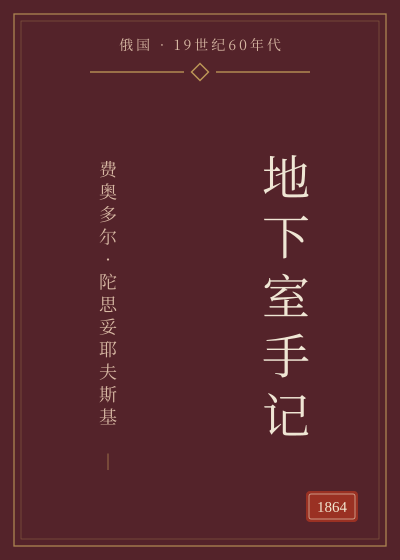
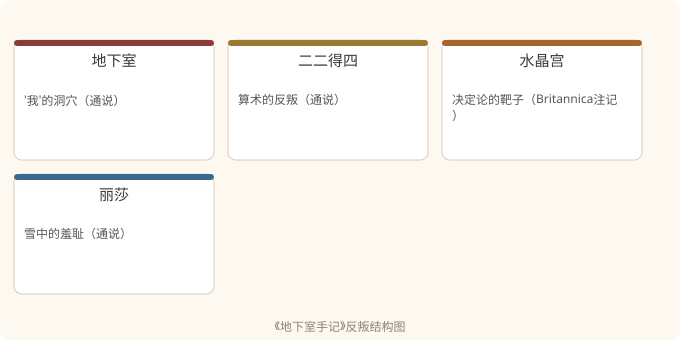

地下室手记
一、基本信息
| 作者 | 陀思妥耶夫斯基 |
|---|---|
| 成书/出版 | 1864年（作者页注记：Britannica——地下室手记 (1864)——'挑战决定论与空想社会主义'——存在主义先声） Fyodor Dostoyevsky — Encyclopaedia Britannica (by Gary Saul Morson)（百科全书） |
| 国别/地区 | 俄国 |
| 时代 | 近代 · 19世纪60年代 |
| 体裁 | 中篇小说 |
| 语言 | 俄语 |

《地下室手记》反叛结构图（主题·结构图）
二、创作背景
作者页注记：地下室手记 (1864)——'挑战决定论与空想社会主义'（Britannica）——存在主义先声。
Britannica：陀思妥耶夫斯基——俄国小说家（作者页语境）。
题材（通说待核）：'地下室人'的两部分自白——自我意识的自虐与'二二得四'的算术反叛。
三、内容脉络
（通说待核）第一部分：'地下室人'的哲学独白——反对水晶宫。
（通说待核）第二部分：丽莎与雪中追悔的往事。
四、主要人物表
| 人物 | 身份 | 说明 |
|---|---|---|
| '地下室人' | 退休公务员 | （通说待核，Britannica未载） |
| 丽莎 | 妓女 | （通说待核） |
五、主题与艺术特点
- 自由意志对决定论的反叛（Britannica 注记：挑战决定论）。
- 自我意识的病态（通说待核）。
- 存在主义先声（Britannica 注记）。
六、影响与评论
- Britannica：'挑战决定论与空想社会主义'（作者页注记）。
Fyodor Dostoyevsky — Encyclopaedia Britannica (by Gary Saul Morson)（百科全书） - Britannica：陀思妥耶夫斯基为'人类灵魂的伟大审问者'说待核（不采）。
Fyodor Dostoyevsky — Encyclopaedia Britannica (by Gary Saul Morson)（百科全书）
七、阅读建议
难点
- 独白体的自我矛盾。
- 1860年代俄国虚无主义语境（通说待核）。
- 《地下室手记》中译本（人民文学等——通说待核）。
- 俄文原版（公有领域）。
陀氏思想门槛；后接《罪与罚》。
八、待核实
- 人物名（地下室人/丽莎）核对（通说）。
- 1864年发表（《时代》杂志说）待核。
- '水晶宫'指涉（车尔尼雪夫斯基说）待核。
本页主要来源
相关作品：人世间